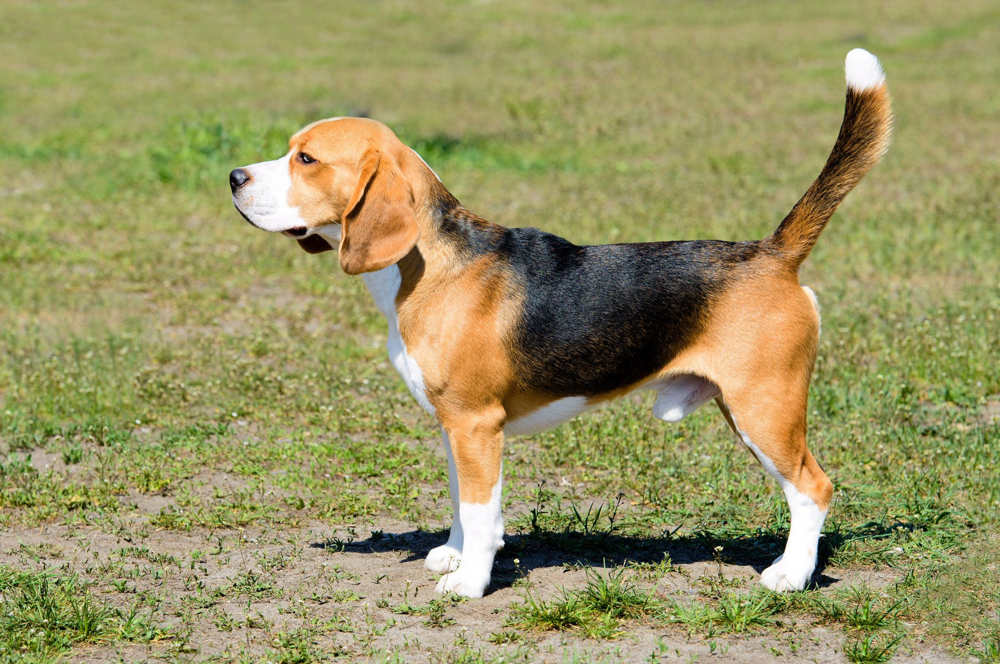
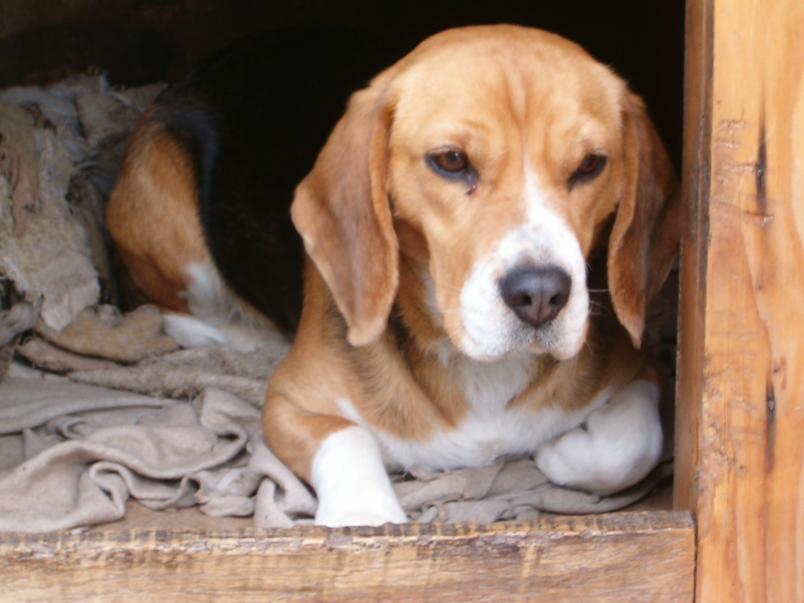
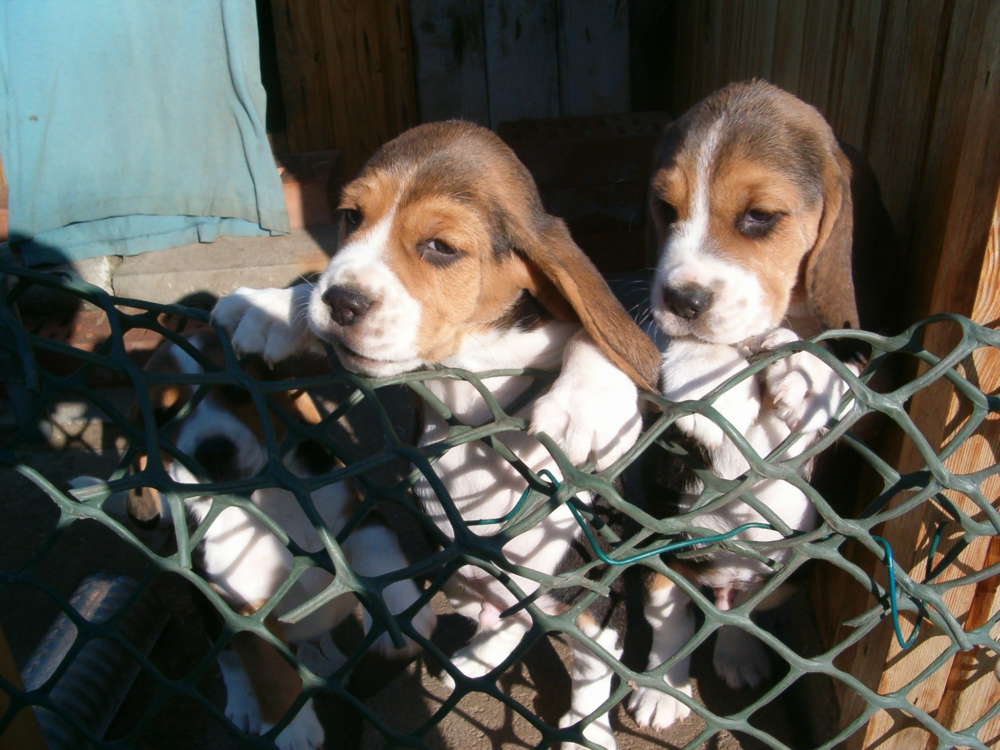
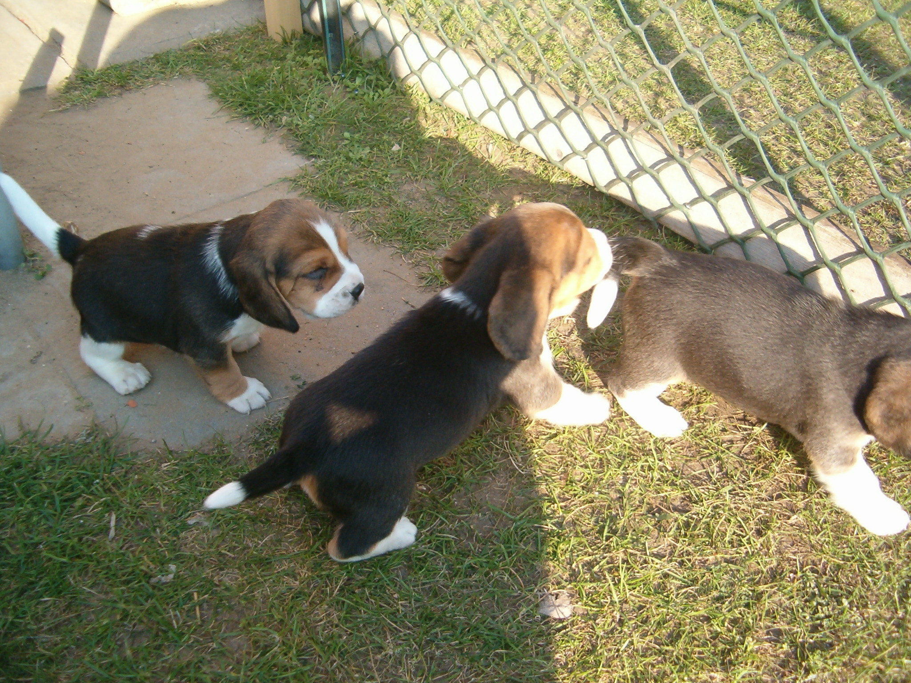

|  |
A beagle határozottan brit fajta, eredete a kelta időkig vezethető vissza, amikor is a beagle-hez hasonló, kistermetű kutyákat használtak vadnyulak vadászatára a brit szigeten éppúgy, mint Wales-ben. Mindig csoportban vadásztak, a híres falkavadászatok során nagyra becsülték azon képességét, hogy megtalálja és követi a zsákmány nyomát, felkutatja azt a vadásznak.
Mivel annyira bájos, sokan vonzódnak a beagle-hez, az emberek hamar felismerik megnyerő személyiségét: játékosságát, kíváncsi természetét, magabiztosságát. A beagle farka örökké jár, folyton csóvál és mindenkit szeretne azonnal üdvözölni. Ez a társaságkedvelő, barátságos természet az, ami bizony néha bajba is sodorja. Nem igazán szeret egyedül lenni, így amikor mérges, vagy éppen csak rossz hangulata van, igencsak szereti használni a hangját. Ez a hang zene a vadász fülének, bár igencsak metsző és hangos, aminek azért a család, a barátok és szomszédok kevéssé örülnek. A fajta mind a mai napig a top-listák élmezőnyében szerepel. Mivel olyannyira igénytelen, tanulékony és kellemes fajta, ráadásul szelíd és barátságos, nem csak a filmkészítők, de a kutatók is kedvelik. Sajnos a legtöbb kísérleti területen előszeretettel alkalmazott kísérleti állat.
Rövid és kemény szőre könnyen tisztán tartható, és mivel elég tömör és kicsi eb, nem nagy feladat a gondozása. Füleit és a szem körüli laza bőrt rendszeresen tisztán kell tartani, az időnkénti fürdetés hatására pedig nem csak csinos, de jó illatú is lesz a kutya.
Igazi vadászként a beagle mindig készen áll egy felfedező útra. Nem kell, hogy a séta órákig tartson, de legyen mindenképp érdekes a számára – azaz legyen lehetősége szimatolni, engedjék, hogy orra „elkapja” a szagokat. Lehet kirándulni vele akár a földeken, akár a szomszédságban, de a háztömbök körül is – mindegyik kellemes a számára, és megadja a szükséges mozgás lehetőségét.
Érdemes kihasználni a beagle rajongását az élelemért, hogy inspirálja és motiválja őt a nevelés során. Makaccsá és könnyen zavarodottá válhat, de odafigyel és tanul, ha gazdája valami olyat kínál, amit tényleg szeretne megkapni. A beagle gyorsan tanul, és ha már elsajátította az alapokat, készen áll a felsőbb szintekre lépésre. Kifejezetten intelligens és jó idegzetű fajta. Egyáltalán nem agresszív, köszönhetően annak, hogy hosszú évszázadokon át falkában tartották.
Nincs olyan étel, amit a beagle ne szeretne. Imád koldulni, ami gyakran elhízáshoz, ez pedig további egészségügyi problémákhoz vezet. Nagyon fontos a beagle-t ideális súlyban tartani egész életén át, és fontos a kiváló minőségű eledel is.
|  | |
|  |